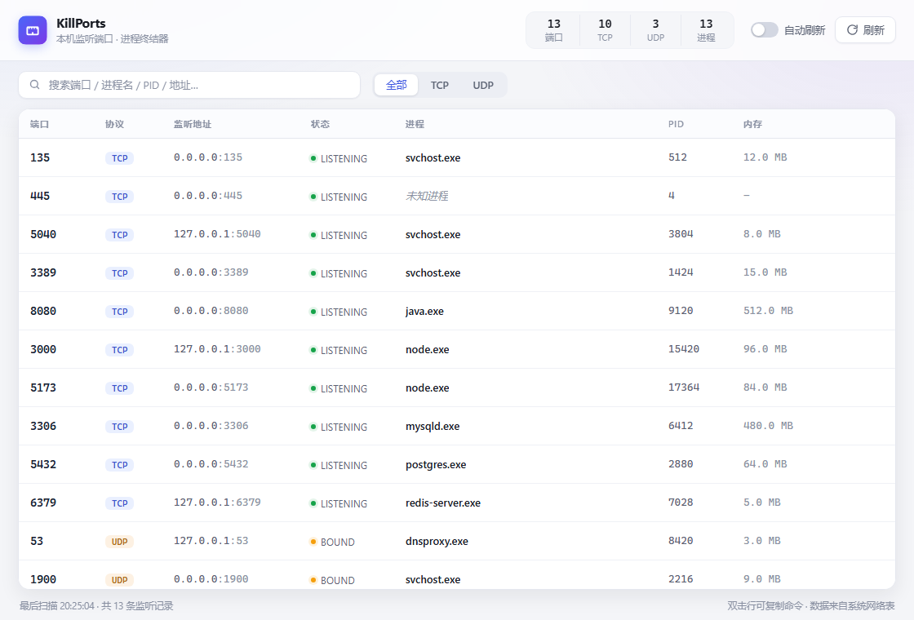

为「查端口 → 找进程 → 杀进程」这条高频路径做的每一处减法
TCP LISTEN 与 UDP 绑定一个不漏，通过系统网络表直读，区分 IPv4 / IPv6 与监听地址。
每条端口记录直接挂上进程名、PID、可执行文件路径与内存占用，不用再拿 PID 去任务管理器里翻。
选中即杀，二次确认展示进程名、PID 与路径，提示数据丢失风险，杜绝手滑。
禁止结束自身进程与 PID 0/4（内核），失败返回明确的中文原因；权限不足时一键以管理员身份重启。
按端口、进程名、PID、地址即时过滤，TCP / UDP 一键切换；系统进程自动打标，一个开关即可隐藏；4 秒自动刷新保持数据新鲜。
Ctrl+R 手动刷新、Ctrl+F 聚焦搜索、Esc 关弹窗；双击行直接复制 taskkill /F /PID <pid>。
下载即用，无需安装任何运行时
前往 Releases 下载安装包（NSIS / MSI），或直接下载仓库构建产物中的单文件 kill-ports.exe 免安装运行。
打开后自动完成一次端口扫描，所有监听中的 TCP / UDP 端口按端口号升序排列。
搜索定位到占用端口的进程，悬停点击「结束」并确认即可。结束系统服务请在提示条中「以管理员身份重启」。
git clone https://github.com/jetamie/kill-ports.git
cd kill-ports
npm install
npm run app:dev # 开发模式，热更新
npm run app:build # 构建发布包小而快，是有原因的
结束系统级服务（如 svchost.exe、System）需要管理员权限。在应用顶部黄色提示条点击「以管理员身份重启」，或右键以管理员身份运行程序。
不会。程序内置自我保护：禁止结束自身进程与 PID 0 / 4（内核与 System），其他进程结束前均有二次确认，展示完整的进程名、PID 与可执行路径。
默认每 4 秒自动刷新，可通过顶部开关关闭；随时 Ctrl+R 手动刷新。数据来源为系统网络表，与 netstat -ano 一致。
目前主要面向 Windows（提权重启等功能依赖 Windows API）。核心的端口枚举与进程结束逻辑基于跨平台库，理论上可移植，欢迎 PR。